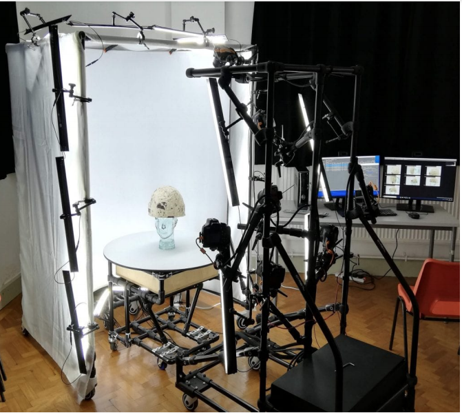
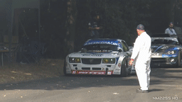
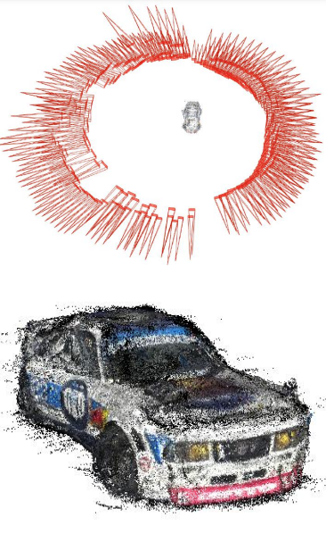
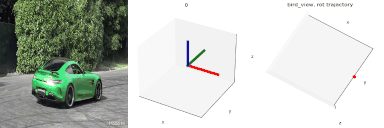
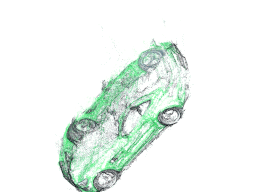
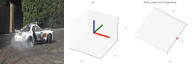
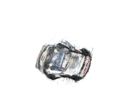

|  |  |  |
| Classic turntable | Accidental turnable left: Internet video, right: SfM pose estimation and 3D reconstruction [(Youtube video link)](https://www.youtube.com/watch?v=8rFNRri8-TI) |
|
|  |  | ||||
|  |  | ||||
| Source: [Youtube](https://www.youtube.com/watch?v=8rFNRri8-TI) @[NM2255 Car HD Videos](https://www.youtube.com/@NM2255) | |||||